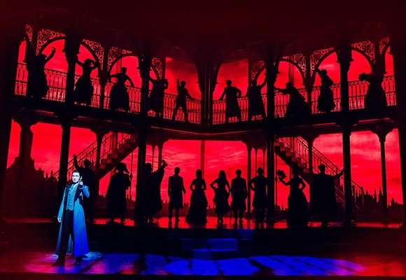

- Sweeney Todd
- Jekyll And Hyde
- Werther
Musical 뮤지컬

Musical은 노래, 춤, 연기[1]가 어우러지는 무대극 공연 양식이다.
오페라와 연극의 중간쯤에 위치한다고 볼 수 있다.[2] 오랜 세월 동안 장르의 유형이 비교적 명확해진 오페라나 연극과 달리, 뮤지컬은 대중적 성격으로 약간 그 사이를 오락가락하는 자유로움이 있다. 주가 되는 음악 면에서 오페라와 달리 록, 클래식, 팝, 재즈 등을 멋대로 오락가락하기도 하고 춤 역시 현대무용과 고전무용부터 아이돌 댄스[3] 까지 가리지 않고 자유롭게 사용한다. 유명 히트곡을 집대성해 만드는 주크박스 뮤지컬이 있는가 하면 대사들을 일절 배제하고 모든 구성을 노래에 실어 소화하는 클래식한 느낌의 뮤지컬도 있다.[4] 비교적 제약이 적고 다양한 시도에 열려 있는 장르이다 보니 '이것이 뮤지컬이다'라는 칼같은 정의를 한 마디로 내리기는 상대적으로 어려운 편. 굳이 정의하자면 연극적인 베이스 위에 음악과 춤을 얹어 놓은 장르이다.
최근에는 뮤지컬 배우도 하나의 연기자로서 인정받으면서 가수나 정극 연기자들과 역할교환이 많이 이루어지는 편. 메이저급 연기자들이 뮤지컬에 주연으로서 출연하는 경우도 흔치 않게 있으나 알고 보면 무대극 출신인 연기자들인 경우가 많다.[5] 그렇지 않은 연예인 출신의 배우가 무대극으로 넘어가는 경우도 꽤 보인다. 물론 환영은 못 받는다. 다른 분야에서 일하다가 넘어온 배우들은 실력이 다른 배우들을 못 따라가는 경우가 왕왕 있어서(카메라 연기와 무대 연기는 방법론에서 이미 차이가 있다) 무대극 배우들과 비교되며 까이는 경우가 아주 많다.